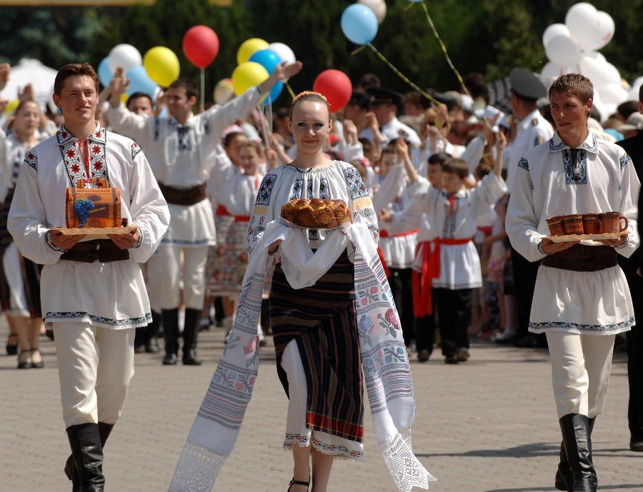

Cultură :
Cultura Republicii Moldova prezintă o paletă largă de activități culturale: literatura, teatrul, muzica, artele plastice, arhitectura, cinematografia, radiodifuziunea și televiziunea, arta fotografică, designul, circul, arta populară, arhivele și bibliotecile, editarea de cărți, cercetarea științifică, turismul cultural și altele.
Activitatea concertistică academică este asigurată de trei instituții concertistice: Filarmonica Națională ”Serghei Lunchevici” (2 săli de concert, orchestră simfonică, capelă corală, ansamblu de muzică populară); Sala cu Orgă (orchestră de cameră și cor de cameră); Palatul Național (Organizația Concertistică și de Impresariat „Moldova-Concert”: formații artistice de muzică și dansuri populare, de muzică ușoară).
Folclorul în Republica Moldova are o puternică bază de origine daco-latină și cuprinde un sistem de credințe și obiceiuri populare, concretizate în muzică și dans, în poezia și proza orală, mitologie, ritualuri, teatru popular etc. Acest patrimoniu cultural, în ansamblul manifestărilor sale, constituie un domeniu amplu, de o valoare deosebită, al artei naționale, care nu numai a precedat formele ei culte, ci a și continuat să se dezvolte în epoca modernă, asigurând culturii profesioniste substanța originalității ei etnice.
Republica Moldova are un total de 22 instituții de spectacol: 18 teatre dramatice, un teatru de operă și balet, un teatru etno-folcloric și 2 teatre de păpuși. 17 teatre sînt situate în capitala țării și 5 în alte localități. Cele mai importante teatre participă cu succes la festivaluri în străinătate, organizează festivaluri internaționale acasă, întreprind turnee în Franța, Italia, SUA, Rusia, Japonia, China, România, în alte țări.
Patrimoniul cultural al Republicii Moldova reprezintă o totalitate de valori și bunuri culturale (materiale și spirituale, mobile și imobile) de importanță locală, națională și mondială, constituite pe parcursul istoriei: situri arheologice, case de locuit, conace, cetăți, mănăstiri și biserici, lucrări de artă monumentală, monumente și instalații tehnice, ansambluri de construcție – piețe, străzi, cartiere, sate și centre urbane sau zone etnografice cu arhitectură tradițională. Actualmente, în republică are loc reconsiderarea atitudinii societății față de patrimoniul cultural și natural, față de diversitatea expresiilor culturale.
Patrimoniul arheologic al Republicii Moldova este bogat în opere de artă de o vechime considerabilă. Au fost depistate mostre de sculptură încă din perioada paleoliticului târziu. Ceramica culturii Cucuteni din perioada eneolitică este atestată în mai multe localități ale Republicii Moldova și posedă valențe artistice incontestabile, prezentînd o întreagă mitologie în imagini.
Tradiții
Republica Moldova este o țară europeană cu o îndelungată istorie în cadrul statului românesc (medieval și pre-modern) Moldova, populată preponderent de moldoveni (români), dar și de diverse etnii precum ucraineni, bulgari, găgăuzi, ruși, evrei, germani, cehi etc. Aici s-au păstrat multe tradiții multiseculare care se regăsesc și în jumătatea vestică a Moldovei și în restul României, cu elemente comune popoarelor creștine din estul Europei.
Multe evenimente tradiționale moldovenești reprezintă un amalgam de elemente caracteristice calendarului agricol, păstoresc, religios și civil, amestec, care în Moldova s-a transformat într-un permanent izvor de bunavoință, căldură și ospitalitate.
Oaspeții Moldovei în timpul sărbătorilor pot participa la un șir de evenimente culturale: concerte („Mărțișor”, „Cireșar”, „Invită Maria Bieșu” etc.), teatre („Bitei” etc.), parade și manifestări de masa de Ziua Independenței, „Limba Noastră”, hramurile orașelor și satelor etc. Zilele roadei sunt marcate în orasele și satele noastre prin iarmaroace tradiționale. În timpul acestor evenimente turiștii străini pot cunoaște îndeaproape folclorul, costumele tradiționale, piesele de artizanat, etc.
Apar multe tradiții cu caracter familiar: cumetriile, nunțile, petrecerile etc., care în sate s-au transformat în adevărate spectacole cu mulți oaspeti și daruri. Tradiționale în Moldova sunt șezătorile în zilele de iarnă cu cântece de lăutari și dansuri. În mare parte, sărbătorile din Republica Moldova și cele din România, sunt identice.
Un popor fără cultură e un popor ușor de manipulat.
- Immanuel Kant